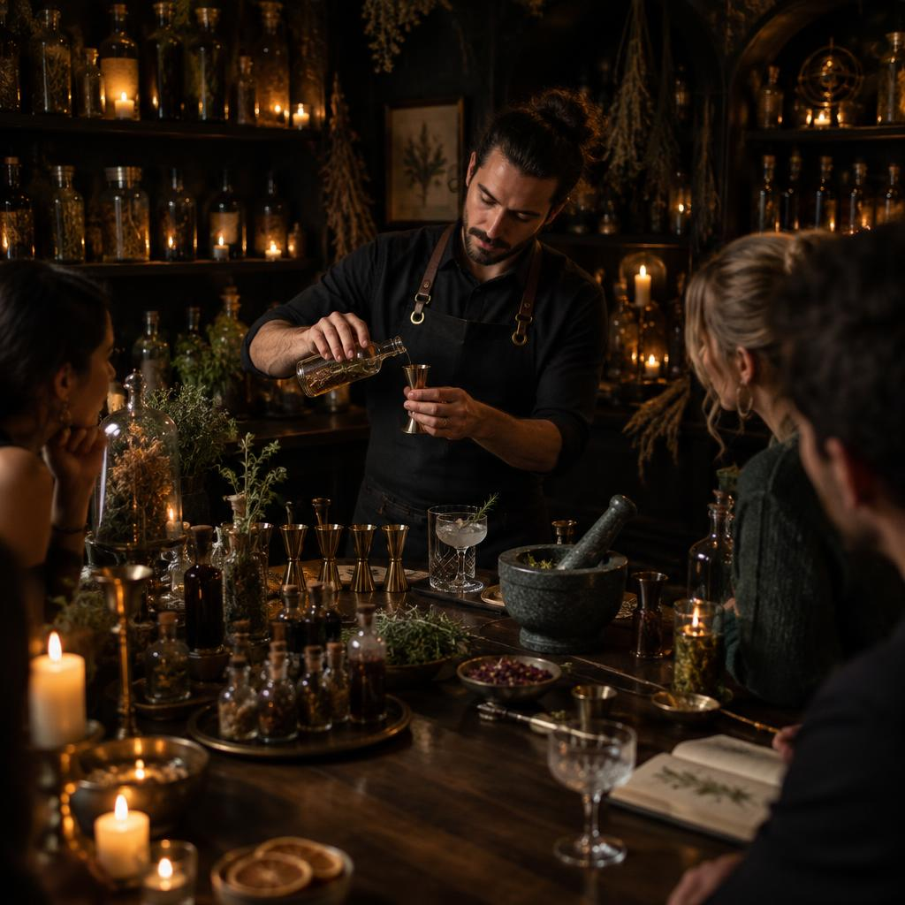
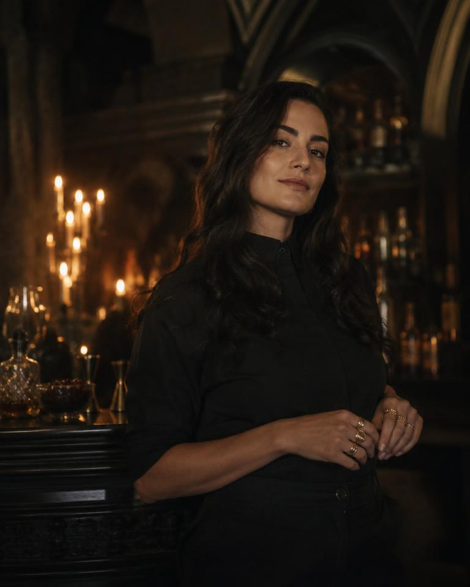
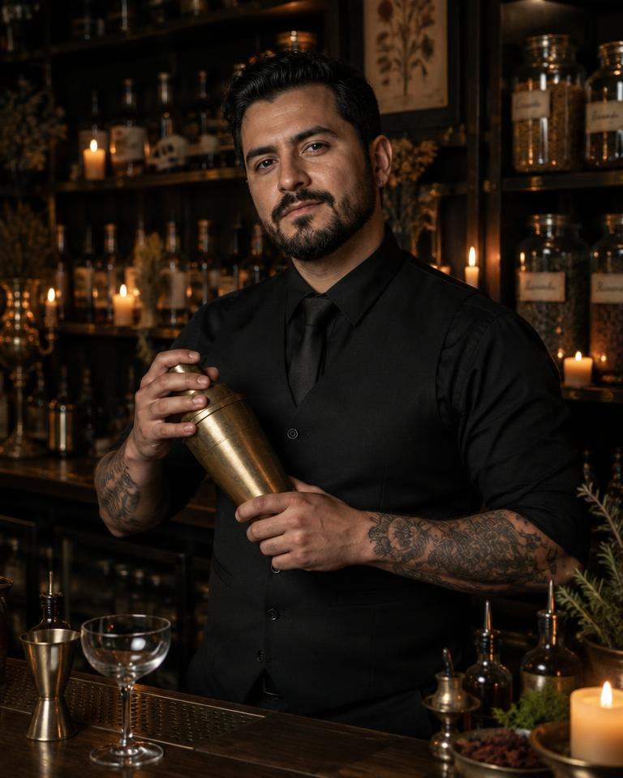
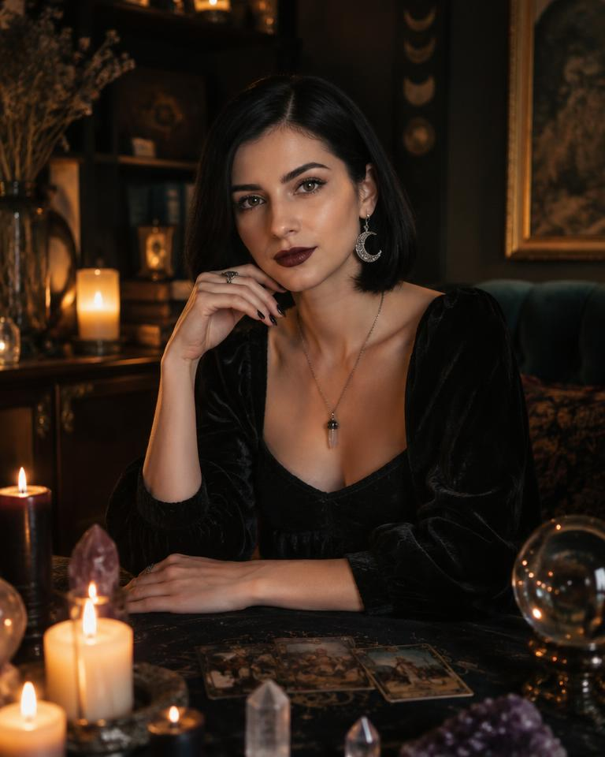
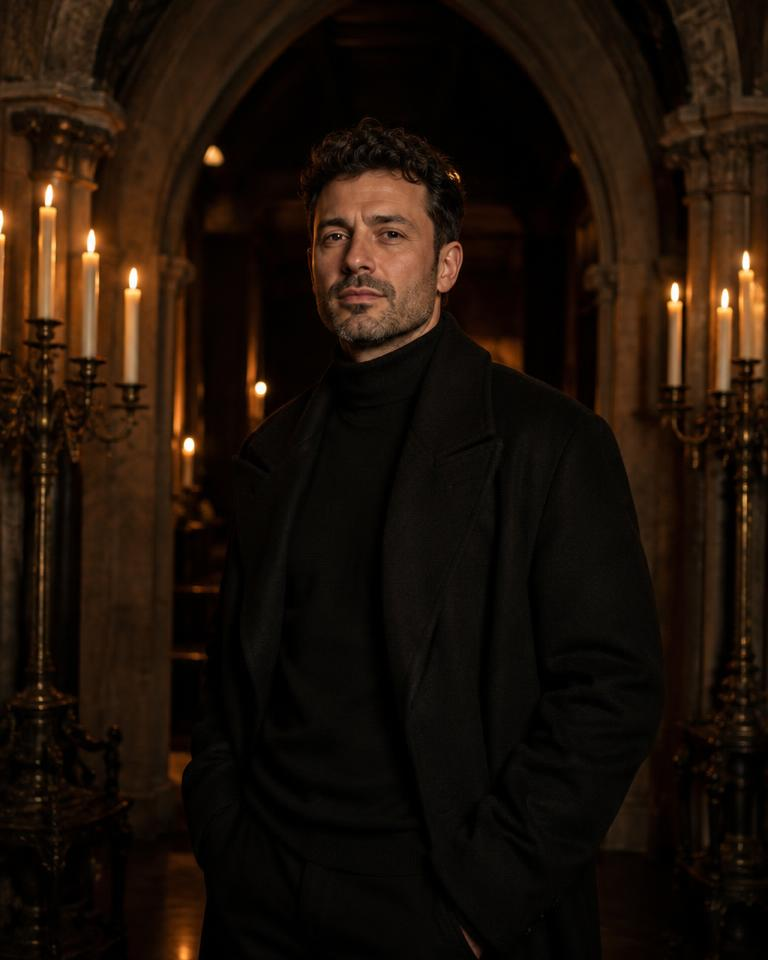

Misión
Crear experiencias inmersivas donde la coctelería de autor y el esoterismo moderno despierten curiosidad, conexión y asombro en cada visitante.

Desde 2018 reunimos a quienes buscan algo distinto: coctelería seria, estética oscura y un poco de magia cotidiana.
Coven nació como una fiesta clandestina en un sótano de Chapinero: amigos bartenders, una baraja de tarot heredada y cócteles servidos en frascos de botica. El rumor corrió más rápido de lo esperado.
Hoy, Arcana & Elixires es un bar inmersivo con alma de gabinete de curiosidades. Aquí la coctelería de autor se encuentra con el esoterismo moderno —tarot, astrología y rituales lunares— vividos como arte, juego y comunidad. Sin juicios, sin dress code obligatorio y con un solo pacto: pasarla increíble y cuidarnos entre todos.
Primeras noches secretas en un sótano de Chapinero, con 30 invitados por noche.
Lanzamos el Kit de Alquimia en Casa y llevamos el ritual a miles de hogares.
Abrimos nuestra casa actual en la Zona T, con salón privado y barra de botica.
Reconocidos entre los bares temáticos imprescindibles de Bogotá por la prensa local.

Crear experiencias inmersivas donde la coctelería de autor y el esoterismo moderno despierten curiosidad, conexión y asombro en cada visitante.
Ser el referente latinoamericano de entretenimiento temático alternativo, y llevar el universo Coven a nuevas ciudades para 2028.
Bartenders, tarotistas y creativos con un mismo propósito: que salgas con una historia que contar.

Bartender premiada con 12 años detrás de la barra. Diseñó cada elixir de la carta y aún prueba todos los lotes de infusiones.

Especialista en técnicas de humo y fuego. Si tu cóctel llega envuelto en niebla, probablemente lo preparó él.

Tarotista y astróloga con más de 4.000 lecturas. Convierte cada tirada en una conversación honesta y sin miedos.

Escenógrafo y productor. Crea las noches temáticas, las ceremonias de luna llena y cada aquelarre privado.
Te contamos la historia completa con un elixir en la mano. Reserva tu mesa o escríbenos para visitas de prensa y alianzas.